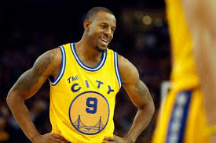

Andre Tyler Iguodala ; born January 28, 1984) is an American professional basketball player for the Golden State Warriors of the National basketball Association (NBA). The swingman was an NBA All-Star in 2012 and has been named to theNBA All Defensive 1st team twice. Iguodala won an NBA Championship with the Warriors in 2015, when he was named the NBA Finals Most Valuable Player. Iguodala helped the Warriors return to the NBA Finals for a third straight year in 2017, winning his second NBA Championship. He was also a member of the United States National Team at the 2010 Fiba world championship and 2012 summer olympics winning the gold medal both times.

Iguodala went to Lanphier High school in Springfield, Illinois, before attending the University of Arizona. After completing two years, he declared for the 2004 NBA Draft, where he was drafted as the ninth overall pick by the Philadelphia. Iguodala played for Philadelphia until the summer of 2012, when he joined the Denver Nuggets in a four-team trade. He was acquired by Golden State in 2013. In 2014–15, he became a reserve for the first time in his career, but captured the Finals MVP after returning to the Starting lineup in the middle of the finals series.